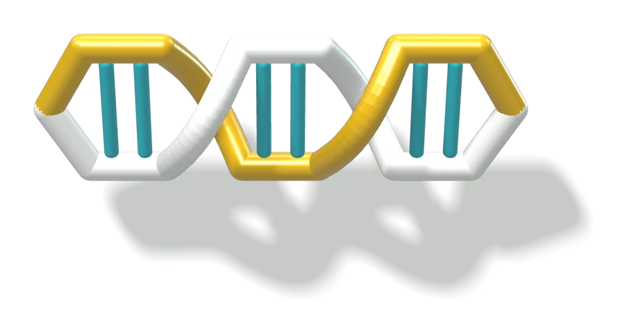

أسئلة يطرحها الناس كثيرًاQuestions people often ask
إن لم تجد سؤالك هنا، فالمستشار الوراثي متاح في البوابة، ويمكنك مراسلة الفريق.If your question is not here, a genetic counsellor is available in the portal, and you can write to the team.
عن النتيجةAbout results
ماذا يعني أنني «حامل للصفة»؟What does it mean that I am a “carrier”?
تحمل نسخة واحدة من الجين تحمل الصفة ونسخة نموذجية. الحامل للصفة سليم في الغالب ولا يحتاج علاجًا لها، لكنه قد ينقل الجين إلى أبنائه.You have one copy of the gene with the trait and one typical copy. Carriers are usually healthy and need no treatment for the trait, but can pass the gene to their children.
هل يمكن أن تتحول الصفة إلى مرض مع الوقت؟Can the trait turn into the disease over time?
لا. في الثلاسيميا بيتا وفقر الدم المنجلي تبقى الصفة صفة طوال الحياة.No. For β-thalassaemia and sickle cell disease, a trait stays a trait for life.
إذا كان شريكي حاملًا أيضًا، فماذا يعني ذلك؟If my partner is also a carrier, what does that mean?
في كل حمل احتمال 1 من 4 أن يكون الطفل مصابًا، و2 من 4 أن يكون حاملًا، و1 من 4 ألا يحمل الصفة. يشرح لكما المستشار الخيارات المتاحة كلها.In each pregnancy there is a 1 in 4 chance the child is affected, 2 in 4 a carrier, and 1 in 4 not a carrier. A counsellor explains all the options available to you both.
هل تخبرني سمات هل أتزوج أم لا؟Will SIMAT tell me whether to marry?
لا. سمات غير توجيهية: تشرح وتعرض الخيارات بالوزن نفسه، والقرار لك ولشريكك.No. SIMAT is non-directive: it explains and lays out the options with equal weight, and the decision is yours and your partner’s.
عن الأسرةAbout family
لماذا قد يهمّ أقاربي أن يعلموا؟Why might it matter to my relatives?
لأن الصفة تنتقل في الأسرة، فقد يحملها إخوتك أو أبناء عمومتك دون أن يعلموا، ومعرفتها تساعدهم في قراراتهم.Because the trait runs in families, your siblings or cousins may carry it without knowing, and knowing helps them with their own decisions.
هل سيعرف أقاربي أنني أجريت الفحص؟Will my relatives know that I was tested?
الجهة الصحية، لا سمات، هي من ترسل للأقارب المعنيّين دعوة رسمية لفحص مجاني. ولا تذكر الدعوة اسمك ولا أنك أجريت فحصًا، ولا يرى أحد منهم نتيجتك.The health authority, not SIMAT, sends the relatives concerned an official invitation for a free test. It never mentions your name or that you were tested, and none of them sees your result.
هل تذكر الدعوة الرسمية اسمي؟Does the official invitation mention my name?
لا. تصدر الدعوة من الجهة الصحية وتدعو القريب إلى الفحص دون ذكر أي شخص.No. The invitation comes from the health authority and invites the relative to be tested without naming anyone.
ماذا لو تبيّن أن قريبًا يحمل الصفة؟What if a relative turns out to be a carrier?
تصله نتيجته وحده، ويبدأ مساره الخاص بجلسة استشارة خاصة به. لا تصلك نتيجته.The result reaches only them, and their own pathway begins with a counselling session of their own. You do not see their result.
عن الخصوصيةAbout privacy
أين تُحفظ بياناتي؟Where is my data stored?
في قواعد بيانات وزارة الصحة داخل المملكة، ووفق نظام حماية البيانات الشخصية. ونحفظ صفة الحمل فقط، لا بيانات جينومية خام.In Ministry of Health databases inside the Kingdom, under the Personal Data Protection Law. We store carrier status only, not raw genomic data.
هل يمكنني حذف بياناتي؟Can I delete my data?
نعم، يمكنك طلب الحذف وفق الأنظمة المعمول بها. وتُحدَّد مدد الاحتفاظ مع مالك البرنامج.Yes, you can request deletion under the applicable rules. Retention periods are set with the programme owner.
هل تُشارَك بياناتي مع برنامج الجينوم السعودي؟Is my data shared with the Saudi Genome Program?
في النموذج المقترح لا تُشارَك إلا إحصاءات مُجمَّعة غير معرِّفة مع البرامج الوطنية، وبحوكمة مالك البرنامج. لا أسماء ولا بيانات جينومية.In the proposed model, only aggregated, de-identified statistics are shared with national programmes, under the programme owner’s governance. No names and no genomic data.
للممارسينFor professionals
هل تحلّ سمات محل المستشار الوراثي؟Does SIMAT replace the genetic counsellor?
لا. تتولّى الشرح الروتيني والمتابعة، وتحيل الحالات المعقّدة وكل طلب تواصل إلى مستشار بشري.No. It takes on routine explanation and follow-up, and routes complex cases and every contact request to a human counsellor.
على أي إرشادات تعتمد معايير الرعاية؟Which guidelines do the care checks use?
إرشادات الاتحاد الدولي للثلاسيميا 2021 للثلاسيميا، وإرشادات الجمعية الأمريكية لأمراض الدم 2020 وتقرير المعهد الوطني الأمريكي للقلب والرئة والدم 2014 لفقر الدم المنجلي.The Thalassaemia International Federation 2021 guidelines for thalassaemia, and the American Society of Hematology 2020 guidelines with the NHLBI 2014 report for sickle cell disease.
عن هذا النموذجAbout this demo
هل هذه خدمة حقيقية؟Is this a real service?
لا. هذا نموذج عرض لبرنامج وطني مقترح ضمن MEDATHON 2026. البيانات توضيحية، والأسرة افتراضية، وكل ربط بالأنظمة الحكومية محاكاة.No. This is a demonstration of a proposed national programme at MEDATHON 2026. Data are illustrative, the family is fictional, and every government-system connection is simulated.
هل سمات تابعة لجهة حكومية؟Is SIMAT part of a government body?
لا. سمات مقترح من فريق طلابي، متوافق مع أهداف وطنية معلنة، ولا يتبع لأي جهة حكومية ولا يتحدث باسمها.No. SIMAT is a proposal by a student team, aligned with published national goals. It is not affiliated with, and does not speak for, any government body.